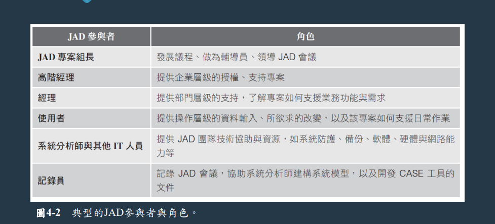
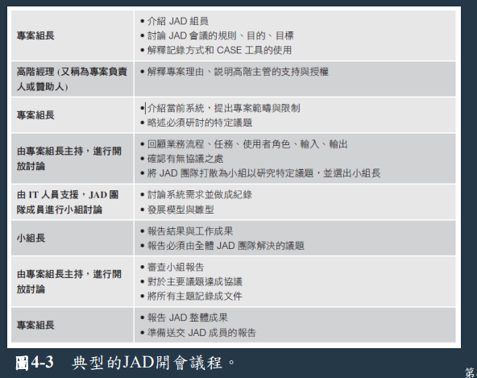
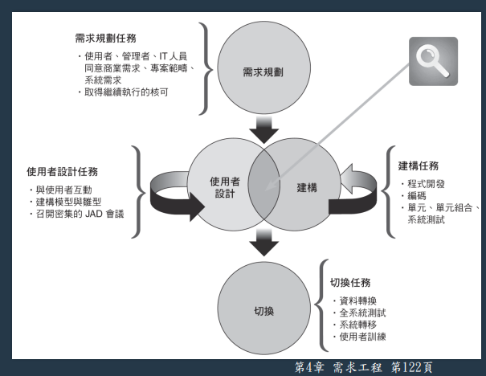
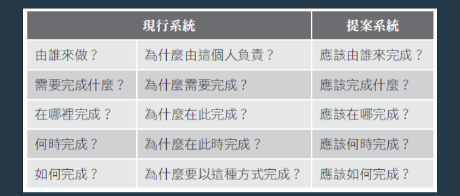
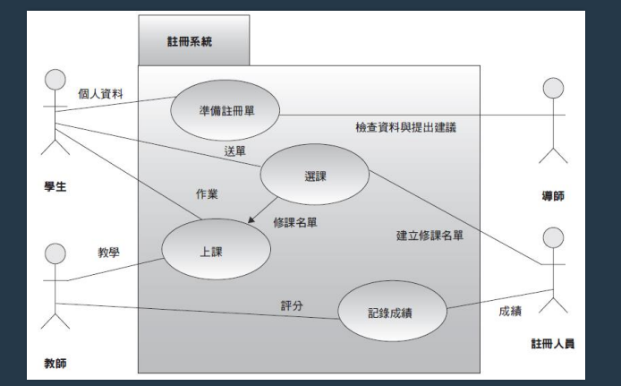
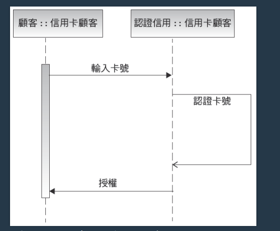

陳杰龍的筆記網站
陳杰龍的筆記網站 主頁
主頁 歸檔
歸檔 分類
分類 其他
其他 關於我
關於我 系統分析與設計- 第四章 需求工程
系統分析與設計- 第四章 需求工程
筆記說明
此筆記用途在於國立屏東大學資訊管理系大三上系統分析與設計重點整理
並非所有人都適用
如果有侵犯到版權的問題在聯繫我，再聯絡我，我在移除
並非所有人都適用
如果有侵犯到版權的問題在聯繫我，再聯絡我，我在移除
系統需求
- 系統需求(system requirement)是指在一套資訊系統中必須包含的特性或功能，以滿足業務需求以及使用者的實際需要
- 需求工程
- 蒐集需求：了解(understanding)問題
- 表示需求：描述(describing)問題
- 確認與驗證需求：同意(agreeing)問題
- 需求類型
- 根據不同特性分類，區分為功能性、非功能性
- 需求的挑戰，不夠精確、同意、拖延
其他考量
- 可延展性(scalability)：系統處理未來業務與交易量增加的能力
- 安全性
- 總體擁有成本(total cost of ownership, TCO)：直接成本與間接成本
團隊技巧
- 聯合應用開發(joint application development, JAD)，頗受歡迎，他將使用者視為實際參與、開發者，需要有一個良好人際關係組長，還有負責記錄討論與決議的組員
- JAD 優劣
- 缺點
- 與傳統方法相比，JAD 成本高
- 規模大，則會比較繁瑣
- 優點
- 能夠有效參與
- 使用者有參與感，更喜歡
- JAD 更容易產生正確系統，提高新系統的投入程度
- 缺點
- JAD 示意圖
 - 開會流程
 - 快速應用開發(rapid application development, RAD)
- 類似於 JAD
- 開發新的資訊系統
- 開發方法
- 包括與傳統 SDLC(系統生命開發週期)
- 減少成本、開發時間
- 提升成功機率
- 依賴雛型化與使用者涉入
- RAD 示意圖
 - RAD 目標
讓使用者參與系統開發的各個階段，以縮短開發時間與支出 - RAD 優劣
- 更快、成本更低
- 注重系統本身，可能會忽略公司要求
- 倉促行事，則會產生問題
團隊技巧
快捷法(agile method)，屬於團隊技巧，而非開發
- 累加方式建構雛形，並根據使用者需求調整
- 不斷修改、刪除、合併雛形，而完成商品
- 會隨著先前的雛型而進步
- 另一種方法為 Scrum
- 心智上的合作
- 每個團員都要扮演角色，達到有趣與加速生產、明確角色
- 強調時間、互動、以及可產生交付軟體的團隊式活動
- 優點
- 彈性、效率快
- 反覆確認，降低最終錯誤風險
- 缺點
- 團隊人員需要良好溝通技巧
- 缺乏結構化與文件紀錄則容易導致風險
- 專案範疇也可能因為使用者需求的變化而變動
蒐集需求
- 使用需求獲取(requirement elicitation)或實情調查(fact-finding)
- 需求獲取，獲得顆戶德需求
- 實情調查，根據現實層面進行分析
- 示意圖
 - step1 決定訪談對象
- 選擇正確的人且問題扎實，考慮來自正式和非正式結構(informal structure)中的人員
- 確認群組或個人訪談
- step2 建立訪談目標
- 決定討論的問題範圍
- 了解事項
- step3 設計訪談問題
- 對訪談的問題進行標準化可以讓訪談有所依循，也避免節外生枝
- 避免導引式問題(leading questions)，有意或無意暗示訪談者說出某個答案
- 開放式問題(open-ended questions)可以讓受訪者不拘形式的回答，沒有固定的標準答案
- 封閉式問題(closed-ended questions)會限制受訪者的回答，在需要特定資訊或查證事實時使用
- 範圍式問題(range-of-response questions)也是一種封閉式問題，它可讓受訪者從一組既定答案中或某個數值範圍選擇解答
- step4 準備訪談
- 不能閒聊，非常重要
- 一個小時內完成
- 將主題提前送給受訪者
- step5 執行訪談
- 會議擬訂計畫
- 進行訪談時先自我介紹、描述專案內容
- 專注傾聽(engaged listening)
- 給對方思考
- 彙整資料，並告訴對方我們為甚麼需要
- step6 記錄訪談
- 可以發感謝卡，並做筆記
- step7 評量訪談
- 檢討自己與對方
其他蒐集需求的方法
- 文件查閱(document review)，了解現有系統如何運作
- 觀察(observation)
- 就是觀察你
- 霍桑效應(Hawthorne Effect，別人看你，你會讓自己做的最好
- 問卷(questionnaire)和調查(survey)
- 訪談針對個人做表達，但花時間
- 問卷可以讓許多人表達意見，但不一定準確
- 腦力激盪 (brainstorming)是指針對特定問題、機會與議題的小組討論
- 結構化腦力激盪 (structured brainstorming)，參加者輪流發言
- 非結構化腦力激盪 (unstructured brainstorming)，立法院，隨便你發言
- 抽樣
- 系統抽樣(systematic sample)：每10人抽取1人
- 階層抽樣(stratified sample) ：在所有四個郵遞區號中，每個抽取5人
- 隨機抽樣(random sample) ：任意抽取20人
- 管你怎麼抽，只要樣本能代表母體就可以
- 研究
- 讀書、開會
- 實地參訪
- 快捷法專案中的需求蒐集
- 注重使用者案例、情境、故事
- 蒐集需求是為了改進
需求的表示
- 分析師紀錄文件時需要注意
- 獲得資訊就紀錄
- 簡單方式紀錄、好懂
- 文件容易被檢索
- 自然語言
- 圖表
- 功能分解圖(functional decomposition diagram, FDD)

- 商業流程模型(BPM)
- 描述一個或多個商業流程
- 商業流程塑模記法(business process modeling notation, BPMN)包含可用來表示事件、程序及流程的各種不同圖形和符號
- 示意圖

- 資料流向圖(data flow diagram, DFD)
- 顯示系統如何儲存、運作、轉變資料
- 模型
- 統一塑模語言(unified modeling language, UML)
- 使用案例圖(use case diagram)
視覺化表示使用者與資訊系統的互動 - 循序圖(sequence diagram)
表述各物件之間互動及其時間 - 示意圖 A
 - 示意圖 B

確認與驗證需求
- 需求的確認與驗證(validation and verification, V&V)
- 為了讓需求能夠定義出顧客真正需要的系統
- 確認：陳述的需求是否正確？
- 驗證：需求是否正確地陳述？
- 並檢查是否有完整性、一致性、可理解性
- 為了讓需求能夠定義出顧客真正需要的系統